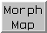

Morph Map 
Morph Map morphs between two related sets of
volume data
(maps). The data sets should have the same grids:
dimensions, spacing, and numbers of points. Note the command
vop resample
can be used to make a copy of one map that has the same grid as another.
By default, morphing intermediates are generated by linear interpolation.
A smooth progression from one map to the other
can be displayed and recorded as a movie. See also:
Morph Conformations,
Volume Series,
making movies, the
ParM filament tutorial at the Chimera website
There are several ways to start
Morph Map, a tool in the Volume Data category
(including from the
Volume Viewer Tools menu).
It is also implemented as the command
vop morph.
The First map and Second map should be chosen from the
adjacent lists of open volume data sets. If the maps of interest
are not already open, the Browse... buttons can be
used to locate and open them.
Moving the Fraction slider generates the corresponding
interpolated state. The morph is opened as new volume data set,
and its display settings
(threshold level/color,
surface smoothing, etc.) can be adjusted in
Volume Viewer.
At a fraction of 0.0,
the interpolated map is the same as the First map,
and at a fraction of 1.0, it is the same as the Second map.
Clicking Options reveals
additional settings that can be hidden again by clicking the small button
 on the right.
on the right.
Play oscillates playback continuously until Stop is clicked.
Record opens a dialog for recording a movie.
Close closes the Morph Map interface, and
Help opens this manual page in a browser window.
Recording a Movie
Clicking the Record button in Morph Map
opens a dialog with settings for recording a movie:
- movie File name and location
- File type, with choices:
- H.264 [.mp4]
- VP8/WebM [.webm]
- Theora [.ogv]
- Quicktime [.mov]
- AVI MSMPEG-4v2 [.avi]
- MPEG-4 [.mp4]
- MPEG-2 [.mpg]
- MPEG-1 [.mpg]
- WMV2 [.wmv]
- APNG [.png] - animated PNG
(lossless, settings for quality and
bitrate
do not apply)
- Encode forward then backward ("roundtrip") (true/false)
- whether to include the frames in reverse order as the second half
of the movie
- Rendering:
- Chimera (default)
- Chimera rendering, normally offscreen
(details...).
Images can be supersampled, that is, initially generated at a
higher resolution and then sampled down to the final size.
- Supersample (1x1/2x2/3x3/4x4)
- how many pixels to sample in the X and Y dimensions for each pixel in
the final saved image; thus, 1x1 corresponds to no supersampling.
Higher values increase the smoothness of edges in saved images and
increase calculation time with little effect on file size.
3x3 is generally recommended when supersampling is done.
- POV-Ray
- raytrace with POV-Ray.
This rendering option is the slowest but includes fancier effects
such as high-quality shadows.
The POV-Ray Options button opens the corresponding
preferences.
Advanced Options:
- Quality (highest/higher/high/good/medium/fair/low)
- higher quality corresponds to higher (variable) playback bit rates and
a larger movie file, assuming the same window size and movie frame rate
- Image format - image file format
(however, PNG will be used regardless of this setting if
raytracing is done):
- JPEG [.jpeg]
- PNG [.jpeg]
- PPM [.jpeg] (default)
- Additional recording options
- options are the same as for the command
movie
record
(include only the options, e.g. directory ~/Desktop/images,
not the movie record part);
if this field is left blank, image frames will be saved
with default names in a default location
(but normally deleted after movie encoding, depending on the encoding options)
- Additional encoding options
- options are the same as for the command
movie
encode
(include only the options, e.g. resetMode keep,
not the movie encode part);
if this field is left blank,
the movie will be encoded to play at 25 frames per second,
and image frames will be deleted after the movie has been encoded
Clicking Record plays the morph from start to end, saving an image
at each step, and encodes the resulting images into a movie file.
Close dismisses the dialog without initiating recording.
Image Tips shows the tips
on preparing images, and
Help opens this manual page in a browser window.
UCSF Computer Graphics Laboratory / December 2021